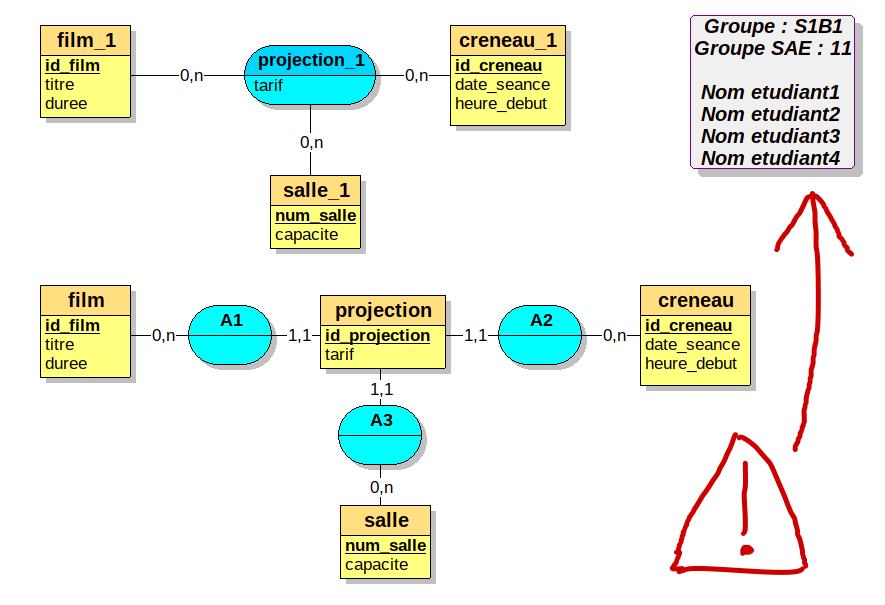

Thème du projet : site de e-commerce
Site de e-commerce qui permet d’acheter des articles, mais aussi
rechercher des articles (filtre) qui peuvent se décliner
commenter/noter des articles définir une(des) adresse(s) pour l’expédition sélectionner des articles dans une liste d’envies et avoir un historique des derniers articles consultés
Démonstration
Groupe de projet
Formation des groupes de projet avec un référent : groupe de 3/4 personnes dans chaque groupe de TP
Créer un groupe et indiquer les membres dans ce document (pour l’affectation des salles)
Affectation d’un sujet par l’enseignant : de 1 de 16
une déclinaison ou une variation ) sous réserve que ça ne ressemble pas trop à un sujet existant.
Semaine 1 / 2
prise en main du projet :
Base de données :
Créer un script SQL « sae_sql.sql » : ce script contient une première version de la base de données du projet et un jeu de test en fonction de votre projet
Créer des enregistrements pour les articles (15 minimum)
Rechercher des images (photos) pour ces différents articles (15 photos différentes minimum, ne pas avoir la même photo pour plusieurs articles )
Copier le système d’authentification vu en TD de BDD et afficher les articles de votre sujet (photos …)
livrable 1 :
Modifier le fichier livrable1_sae_2_4_bdd.ods avec à l’intérieur l’URL de votre projet sur l’hébergeur pythonanywhere : (voir les consignes ci-dessus) et les informations sur le groupe de SAE
Créer un fichier mcd_projet_v1.loo avec la première version du MCD du projet
Créer 2 fichiers PDF d’une page de nom MCD_v1.pdf et MLD_v1.pdf
MCD_v1.pdf : il est composé du MCD, le MCD qui utilise complètement et harmonieusement la page, ajouter sur cette page vos noms, votre groupe de TP (exemple A2) et votre groupe de SAEMLD_v1.pdf : il est composé du MLD, le MLD qui utilise complètement et harmonieusement la page, ajouter sur cette page vos noms, votre groupe de TP (exemple A2) et votre groupe de SAE ATTENTION malus si il n’y a ni le groupe ni le nom des étudiants sur le MCD et le MLD, ou si le nom des fichiers PDF n’est pas correct
exemple de modification :

exemple de fichier PDF (format A4) avec un MCD qui sera imprimé
exemple de fichier PDF (format A4) avec un MLD qui sera imprimé
Créer un fichier sae_sql.sql première version du jeu de test SQL pour votre projet.
La qualité du jeu de test est vraiment prise en compte, nombre de colonnes pour les articles, les types d’articles, le nombre d’articles. Le tout devant ressembler à quelque chose dans laquelle un client pourrait se projeter. (Minimum 15 articles et 4 types d’articles (15 photos différentes minimum, pas de photos identiques pour un article sinon malus, les photos doivent être réalistes et attractives))
pythonanywhere , votre application doit permettre :
de s’authentifier avec le code vu en TD (le mot de passe pour le login “client†est “client”, pour “client2†est “client2†et pour “admin†est “admin”)
l’application doit afficher le jeu de test :
les “articles†de votre projet (dans la base de données, vous ne devez pas utiliser le mot “article”)les “types d’articles†qui seront utilisé par le filtre (le filtre n’est pas évalué dans ce livrable)
relire au dessus La qualité du jeu de test est vraiment prise en compte, nombre de colonnes pour les articles, les types d’articles, le nombre d’articles. Le tout devant ressembler à quelque chose dans laquelle un client pourrait se projeter. (Minimum 15 articles et 4 types d’articles (15 photos différentes minimum, pas de photos identiques pour un article sinon malus, les photos doivent être réalistes et attractives))
étape 1 :
Un sujet va vous être imposé avec des noms d’articles à respecter.
Mais vous pouvez proposer un type d’article et des exemples d’articles avec l’accord de l’enseignant.
Site de vente
Structure de base : application sur laquelle l’utilisateur peut se créer un compte, se connecter et se déconnecter
La base de données dispose de plusieurs tables :
utilisateur (id_utilisateur, login, email, nom, password, role)
commande (id_commande, date_achat, #utilisateur_id, #etat_id)
ligne_commande ( #commande_id , #article_id , prix, quantite)
ligne_panier (#utilisateur_id , #article_id, quantite, date_ajout)
etat (id_etat, libelle )
Par convention le code SQL est en snake_case (sinon pénalité et vous devrez changer vos SQL pour les prochains livrables)
Remplacer le nom de la table article par celui de votre sujet.
Créer la table qui permettra de définir la déclinaison de l’article Remplacer l’attribut article_id par celui de votre sujet dans le schéma ci-dessus.
Créer une table type_article (en modifiant le nom par celui du sujet)
Ajouter des attributs dans la table principale
L’état de la commande peut être selon le sujet, “en attente”, “expédié”, “validé”, “confirmé”
Le système doit disposer d’un système de panier stocké dans une base de données avant la confirmation de la commande (et non en “session”)
Rechercher les clés primaires dans le schéma ci-dessus.Modifier le schéma avec les éléments de votre sujet en vous inspirant d’exemples sur internet
Même si l’objectif n’est pas de passer du temps sur les interfaces, vous pouvez modifier et améliorer les interfaces (10% de la note prend en compte ces modifications)
Affectation des sujets :
IMPORTANT : Derrière le numéro du sujet, respecter :
le nom de la première table (qui remplace article)
ainsi que le nom de la déclinaison (à remplacer par le nom derrière /)
et le type d’article pour le filtre en vert
sujet 1 : meubles /materiaux
meuble materiaux(chene, pin -ou- modele unique) type_meuble fournisseur marque ….. exemple - exemple2
sujet 2 : vetement /taille
vetement taille(taille unique -ou- XS,S,M,M,XL…) type_vetement couleur fournisseur marque ….. exemple
sujet 3: velo /taille
velo taille(taille unique -ou- XS,S,M,M,XL… ) couleur fournisseur type_velo ….. exemple
sujet 4: ski /longueur
ski longueur(longueur unique -ou- 150,160…) type_ski modèle fabricant fournisseur ….. exemple
sujet 5: chaussure /pointure
chaussure pointure(36,38…) ou produit nettoyant ; type_chaussure pointure fournisseur marque couleur ….. exemple ou exemple
sujet 6: telephone /couleur
telephone couleur(bleu noie…) modele categorie fournisseur marque ….. exemple exemple
sujet 7: casque /taille
casque taille(XS,S,M,M,XL…) type_casque couleur taille fabricant fournisseur …..
exemple
sujet 8: lunette /couleur
lunette couleur(bleu noir…) taille indice_protection categorie (soleil protection vue enfant) fournisseur marque ….. exemple
sujet 9: peinture /couleur
peinture couleur(bleu noir… vert) volume_pot(0.5L 1L …) categorie (intérieur bois extérieur métal) fournisseur marque ….. exemple
sujet 10: gant /taille
gant taille(6,7,8,9,10…) ou taille unique type_gant (jardinage ski hiver mode) fournisseur marque ….. exemple
sujet 11: câbles /longueur
cable longueur(50cm , 1m , 1m50 ,…) ou taille unique type_prise (usb jack hdmi …) fournisseur marque …..
sujet 12: clé usb(cle_usb) /capacité
cle_usb capacité (8GO , 16 G0 , …) ou capacité unique type_port ( usb C, USB classique, mini …) fournisseur marque …..
sujet 13: jean /taille
jean taille(W29 W31 W33… L32 (taille américaine)) type_vetement couleur fournisseur marque ….. exemple
sujet 14: parfum /volume
parfum volume(50ml 100ml) type_parfum (homme femme mixte ) fournisseur marque ….. exemple
sujet 15: linge /coloris
linge coloris( voir exemple) , taille, type_linge (serviette bain, ) fournisseur marque ….. exemple
sujet 16: boisson (eau ou jus de fruit) /conditionnement ou fruit ou arome
boisson conditionnement( voir exemple le catalogue celtic) , conteneur (verre, plastique(PET), brique carton , aluminium), type_eau (petillante plate, aromatisé) fournisseur marque ….. exemple - exemple2
livrable 2
Livrable 2 : Ce livrable est composé d’un fichier archive (.zip ou .tar.gz) qui contient le dossier de votre projet (ne pas oublier le fichier SQL (jeu de test) qui est dans le même dossier que le fichier app.py )
Cette partie est à rendre sur moodle
partie python et sql
Il devrait être possible de tester votre application sur l’hébergeur pythonanywhere
structure minimum du site de e-commerce fonctionnelle
frontOffice : formulaire de commandes (clients )
affichage du panier et des articles (sur la même vue)
ajout dans un panier des articles (lien) : formulaire (vérifier que le panier est différent pour 2 clients)
supprimer des articles du panier : formulaire
l’ajout dans le panier d’un article qui est déjà dans le panier modifie la quantité de articles
la validation du panier génère une commande (interface pour confirmer/vider le panier/continuer les achats)
affichage des commandes et du prix total de chaque commande
filtrer les articles par type du coté client (catégorie à l’aide de liens , ou d’une liste déroulante, de case à cocher …), utiliser une session pour stocker ce filtre coté serveur.le client peut voir dans son espace que la commande est prise en compte (réalisée) et le client peut afficher le détail de ses commandes
Affichage du stock d’un article (ajouter l’attribut “stock†dans votre table équivalente à “article”)Gestion du stock , il n’est pas possible de commander un article qui n’est pas en stock backOffice : gestion des commandes (vendeur)
le vendeur peut afficher toutes les commandes et les valider (le client peut visualiser que la commande a été traitée )
le vendeur peut afficher le détail d’une commande (articles, prix, quantité + nom du client et informations sur le client)
le vendeur peut modifier le stock d’un article
le fichier SQL sae_sql.sql qui permet de faire fonctionner votre partie python (ne pas joindre plusieurs fichiers SQL dans votre projet)
étape 2 : travail personnel dans le groupe
Lors des SAE vous définirez et vous m’informerez de la partie de chaque étudiant dans le groupe
tâche par étudiant (1 tâche par étudiant)
modifier le modèle logique de données de façon à ce que votre application puisse réaliser une des tâches suivantes
étudiant 1 : gestion du stock pour des articles ou services de catégories différentes (déclinaisons)
Le stock dépend au minimum d’une des propriétés d’un article (couleur et/ou taille). Si l’article existe en plusieurs propriétés différentes le stock total des déclinaisons est affiché dans la page principale (une déclinaison ou variation )affichage du stock restant avec une ou plusieurs déclinaisons de l’article (dans le front-office : client)
le stock se décrémente lorsque l’on ajoute un/des articles dans le panier, la suppression d’articles du panier re-incrémente le stock avec une ou plusieurs déclinaisons de l’article
lors de l’ajout d’un article dans le panier, le client passe par une interface supplémentaire pour saisir la propriété (choisir la déclinaison) sauf si il n’y a qu’une seule déclinaison (propriété) pour un article.
Affichage du prix total de la commande en cours (panier) et affichage du prix total des commandes.
Affichage de la(les) déclinaison(s) dans le panier (propriété : taille, couleur …) de l’article choisi si il y en a plusieurs possible Affichage des la(les)déclinaison(s) dans les commandes (propriété : taille, couleur …) de l’article choisi si il y en a plusieurs possible (ADMIN) affichage du stock restant pour l’administrateur pour ré-approvisionner des articles (dans le back-office) ; mettre en valeur ces articles.
(ADMIN) interface pour compléter le stock des articles en fonction de la propriété (taille ou couleur).
(ADMIN) afficher dans le tableau des articles si une déclinaison est en rupture de stock (=0) et du nombre d’articles en stock
(ADMIN gestion de la “taille unique†ou “couleur unique”, lors de la sélection de cette propriété, il n’est plus possible d’en sélectionner une autre. Cette propriété n’est pas proposé dans la liste déroulante si une autre déclinaison a déjà été sélectionnée
VISUALISATION de données sur les stocks pour l’administrateur (coût du stock/catégorie stock/(taille ou couleur) …. ) Remarque : pour simplifier le problème, lorsque l’identifiant de la taille ou la couleur est “1”, la taille ou la couleur est considérée comme ‘unique’
étudiant 2 : gestion des commentaires et des notes
ajout de commentaires sur un article par un client ; seule une personne qui a acheté un article donne un avis dessus ; l’administrateur peut supprimer certains avis
l’utilisateur ne peut saisir que 3 commentaires par articles
l’utilisateur peut supprimer des commentaires mais l’édition pour les modifier n’est pas obligatoire
l’utilisateur ne peut saisir que une note par article ou la modifier
afficher la note moyenne de l’article en tenant compte des autres notes (les notes des autres clients)
afficher dans la boutique (vue pour faire les commandes), le nombre de commentaires s’il y en a, et la moyenne de la note s’il y a au moins une note afficher dans un ordre chronologique (temporel) les commentaires des clients et insérer correctement les réponses de l’administrateur derrière un commentaire (ADMIN) l’administrateur peut voir si il y a de nouveaux commentaires sur un article, il peut supprimer un commentaire ou répondre à un commentaire
(ADMIN) lorsque l’administrateur lit les commentaires, l’attribut “valider†passe de 0 à 1 (2 choix possibles, “valider†permet d’indiquer que les commentaires ont été lus par l’administrateur ; autres possibilités, tant que les commentaires ne sont pas “valider”, les cacher aux autres utilisateurs) VISUALISATION de données sur les commentaires, les catégories, les ventes … (note moyenne/catégorie , nombre de note/catégorie) pour l’administrateur
étudiant 3 : gestion des adresses d’expédition et de livraison
l’utilisateur peut créer maximum 4 adresses, il peut les modifier (la vérification est faite coté serveur et un message “flash†s’affiche lorsque le maximum de 4 est atteint)
lors de la création d’une commande :
l’utilisateur doit créer une adresse si elle n’existe pas
sinon la dernière adresse utilisée pour la livraison (favori) est proposée (une seule adresse favorite (ou 2 au choix) pour les 2 adresses)
si l’adresse de facturation est la même que l’adresse de livraison, indiquer à l’utilisateur que ce sont les mêmes adresses
le client peut consulter ses commandes avec les adresses de livraison et facturation
Interface pour ajouter/modifier les informations de l’utilisateur (nom, login, email). Pas de doublon possible avec l’email et le login. Mettre à jour les valeurs de connexion (session).
Le client peut faire l’ajout/la modification/la suppression d’une adresse ; vérifier que l’utilisateur connecté possède bien cette adresse.
Le nombre de commandes par adresse ainsi que l’adresse favorite est indiquée dans le tableau des adresses. Gestion d’une adresse supprimée utilisée dans une commande. Elle ne peut pas être supprimée mais devient non “valide”. De fait cette adresse n’est plus utilisable et n’est plus comptée dans les adresses. Gestion de la modification d’une adresse. Une adresse utilisée pour une commande ne peut pas être modifiée, cette adresse devient non “valide”. De fait cette adresse n’est plus utilisable et n’est plus comptée dans les adresses. Cependant un doublon (une nouvelle adresse) est créée avec les nouvelles informations Re-proposer par défaut la dernière adresse utilisée comme adresse de livraison dans les listes déroulantes des adresses lors du passage d’une commande(l’adresse devient “favorite”) Conserver les adresses utilisées dans les factures même si on modifie l’une de ces adresses Si on supprime l’adresse “favorite”, celle qui a eu le plus de commandes devient “favorite†(ADMIN) si l’administrateur consulte une commande il peut voir l’adresse d’expédition et l’adresse de facturation
VISUALISATION de données sur les ventes (nombre de commandes, Chiffre d’affaire / départements …) VISUALISATION 2 : affichage d’une carte avec les informations sur les clients (nombre de commandes par département …., livraison …)
étudiant 4 (uniquement pour les groupes de 4) : gestion d’une liste d’envies(wishlist) et historique des articles consultés
Difficulté 1 : La liste d’envie est composée par les articles sélectionnés par le “💛”
Dans la liste d’envie (“wishlist”), un article ne peut pas être ajouté 2 fois, le client peut supprimer un article ou ajouter depuis cette liste l’article dans le panier.
Si l’article est commandé il est retiré de cette liste (“wishlist”) dans la base de données.
L’affichage des articles dans la liste d’envie est décroissant et dépend de l’ordre d’ajout (date et heure)
Pouvoir avec l’interface fournie, monter/descendre les articles dans la “wishlist†dans cette liste
Difficulté 2 : l’historique est défini par les articles consultés (on clique sur la photo de l’article)
L’historique n’est composé que de 6 articles différents maximum (on ne stocke que 6 articles au maximum dans la table de la base de données), les 6 derniers consultés.
Le nombre de consultation d’un article est stocké dans un numérique.
Les articles des historiques sont retirés au bout de 1 mois.
Pas de doublon dans l’historique
VISUALISATION de données sur les listes d’envies pour l’administrateur(nombre d’articles /catégorie ) dans la liste d’envies, nombre de clic (consultation) d’un article ….)
Chaque étudiant doit réaliser une requête sur les données de sa partie, et réaliser un graphique (dataviz) qui serait un support de décision , la qualité du jeu de test livré est prise en compte.
Livrable 3 (oral en TP):
Zoom sur les modifications dans le MCD et dans le MR, explications
Réaliser le code python et SQL dans les contrôleurs, (éventuellement modifier les vues) …. pour que votre partie soit fonctionnelle.
Réaliser une vue avec un graphique sur des données de l’application qui serait un support de décision si possible en rapport avec votre partie (exemple étudiant 3 : nombre de clients par départements, régions ou Chiffre d’affaire par région/département)
Présentation de chaque partie en TP et durant les heures de SAE
Il n’est pas nécessaire que toutes les parties fonctionnent ensemble, il n’est pas nécessaire de mettre l’application sur l’hébergeur pythonanywhere ; validation : oral de 5/10mn en TP devant une machine de l’IUT
Déposer votre code source sur moodle
Pour le dernier livrable, la date de rendu est prise en compte. Une petite partie de la note prend en compte que le travail est été fait quelques jours avant la deadline (date limite) et si la présentation a été effectué avant ou après la deadline (date limite)
Autre évaluation : note anglais
oral anglais (voir avec Mme Couturier)
idée sur des coefficients des évaluations et livrables (approximatif) en 2022
Note de M. Noura : coef 1 (visualisation de données)
Note de Mme Couturier : coef 1
Note de M Millet : coef 8
livrable 1 : 0,5
livrable 2 : 2
contrôle MLD/MCD : 1,5
livrable 3 : 4
annexes